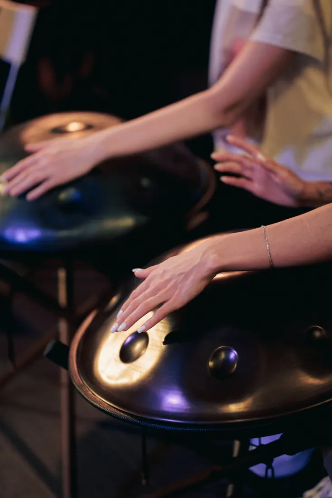
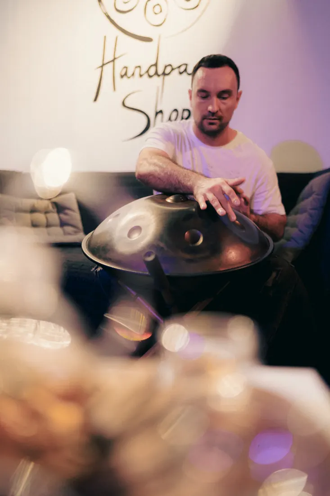
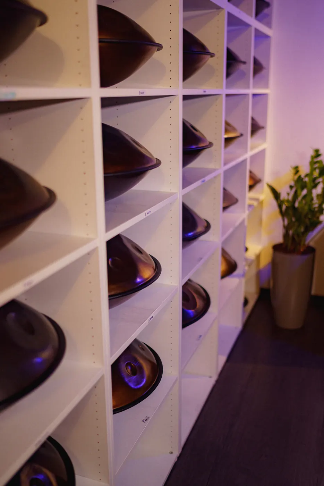
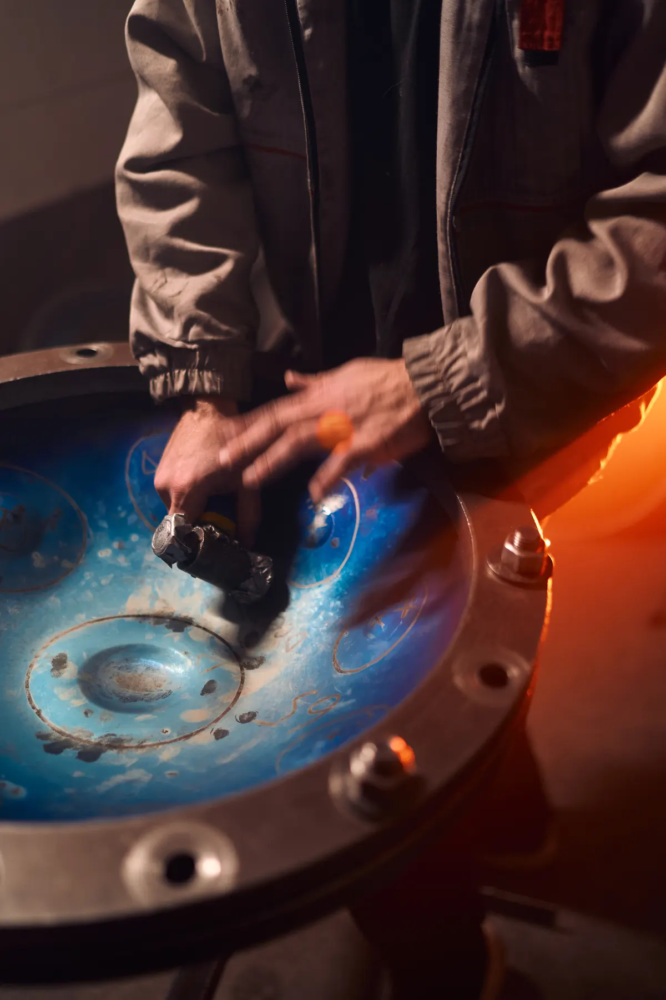
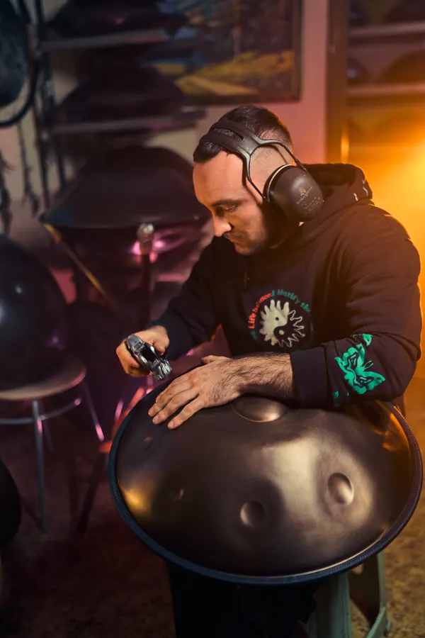
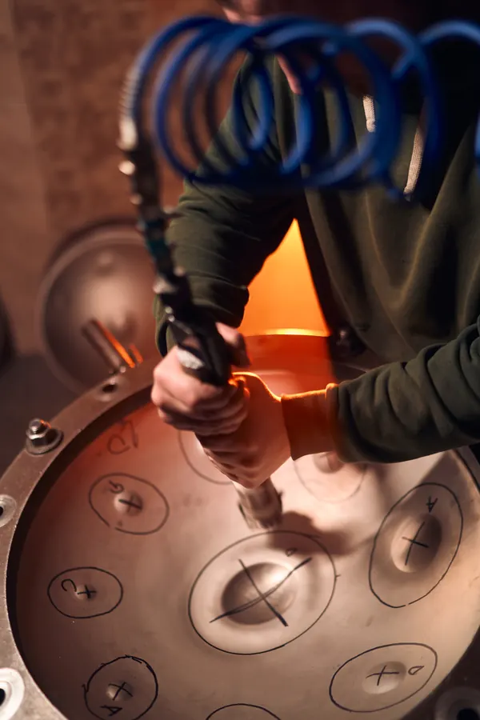
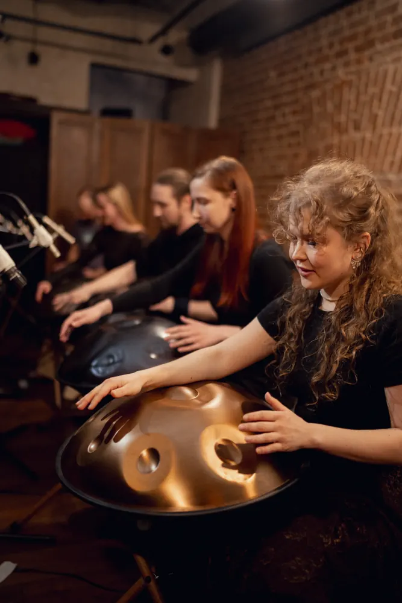
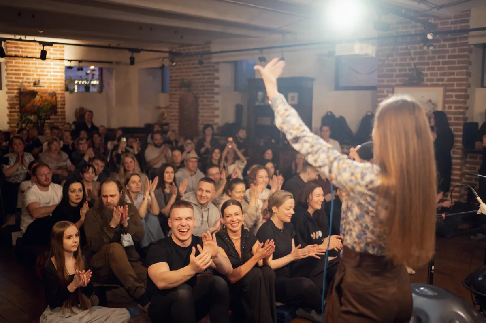
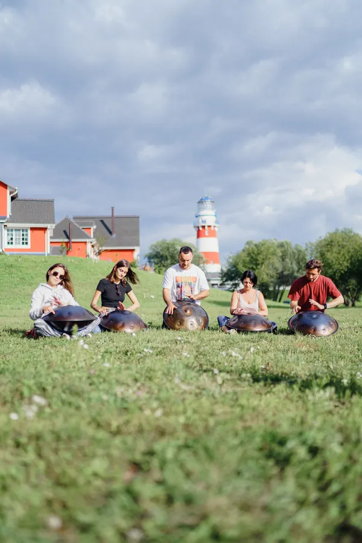
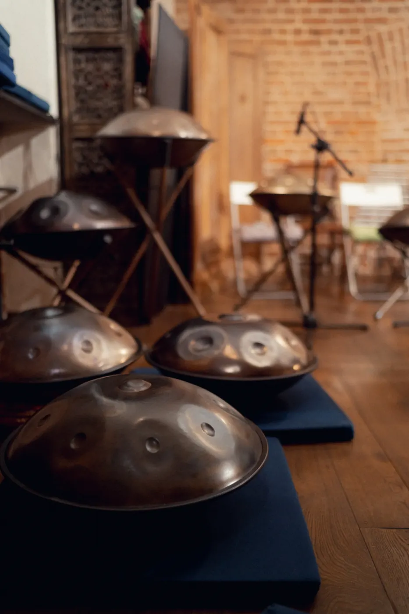

Ханг
Стальной инструмент, на котором вы одновременно задаёте ритм и ведёте мелодию. Поэтому его называют мелодической перкуссией.
- Динг
- основной тон, в центре
- Тональные поля
- ноты вокруг
- Гу
- резонатор снизу, глубокий бас
Создан в Швейцарии в 2000 году Феликсом Ронером и Сабиной Шерер, основателями мастерской PANArt. Тёплый объёмный звук, похожий одновременно на арфу и хор.
Почему
так
легко?
Ноты каждого ханга выстроены в один лад. Каждое поле звучит аккордом: основной тон, октава, квинта.
Ведите руки по полям, как чувствуете, – это уже музыкальная фраза. За несколько занятий без опыта вы начинаете импровизировать. Это состояние мы и называем: найти свой звук.
Создатели называли ханг звуковой скульптурой и советовали следовать за звуком и ощущением касания, не ставя целью мелодию или ритм. Сегодня на ханге играют в академической музыке, неоклассике, электронике и кино, на больших сценах и в студиях.

Как начать знакомство с хангом
Частный визит в студию: 20+ инструментов разных строёв, можно играть на каждом. Без обязательств и без покупки.
Пробное занятие с преподавателем: 45 минут, 900 ₽. Инструмент даём, опыт не нужен. Первая мелодия – на первом занятии.
Консультация мастера: строй, сталь, количество нот, бюджет. Покажем инструменты в наличии и под заказ.
Кому подходит ханг
От медитации до сцены. Инструмент находит место в любой практике и в любой музыке.


Мастера, которые стоят у истоков культуры ханга в России
Кто учит
Научиться можно с нуля, в любом возрасте и без музыкального опыта. Главное – преподаватель, который слышит вас.

Десятки
тысяч
ударов
Его создают руками, снова и снова возвращаясь к каждому звуку. На настройку одной ноты уходит от 200 до нескольких тысяч касаний.
Поэтому ханг живёт десятилетиями. При бережном обращении он годами держит строй, а подстройка раз в несколько лет – обычный уход за инструментом.


Ханг
объединяет
Хэндпан-сообщества – одни из самых гостеприимных в мире музыки. Здесь ценят интерес к звуку: на одном джеме встречаются виртуоз, человек с первым хангом и тот, кто пришёл послушать.




Найдисвойзвукза 45 минут
Пробное занятие – 900 ₽. Инструмент даём, опыт не нужен.